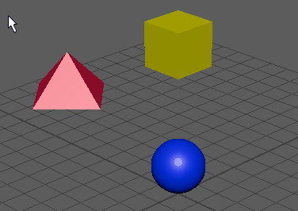

使用父约束，您可以使一个对象的位置到另一个对象相关，以便这些对象的行为就像具有多个目标父对象的父-子关系。有关使用父约束的详细信息，请参见父约束。
注意： 建议在创建第一个父约束之前，先设置父约束选项(Parent Constraint Options)。
创建父约束
- 选择一个或多个目标对象，后跟要约束的对象。
- 在“动画”(Animation) (F4) 或“绑定”(Rigging) (F3) 菜单集中，选择“约束 > 父对象”(Constrain > Parent) >
 。
。
- 设置约束选项或选择“编辑 > 重置设置”(Edit > Reset Settings)。
提示：
启用“保持偏移”(Maintain Offset)以保持受约束对象相对于其目标的当前位置。之后，可以修改对象之间的偏移。（请参见修改父约束偏移。）
- 若要完成约束设置，请执行以下操作之一：
- 单击“添加”(Add)以创建父约束。此时将关闭“父约束选项”(Parent Constraint Options)窗口。选择“编辑 > 保存设置”(Edit > Save Settings)以保存约束选项。
- 单击“应用”(Apply)以创建父约束。此时“父约束选项”(Parent Constraint Options)窗口将保持打开状态。通过单击“应用”(Apply)，还可以将当前约束选项设置应用到其他对象。选择“编辑 > 保存设置”(Edit > Save Settings)以保存约束选项。
- 单击“关闭”(Close)以关闭“父约束选项”(Parent Constraint Options)窗口而不设置或创建约束。

将父约束添加到动画层
- 选择一个或多个目标对象，后跟要约束的对象。
- 选择“约束 > 父对象”(Constrain > Parent) >
 。
。
- 在“父约束选项”(Parent Constraint Options)窗口中，设置所需的约束选项。从“动画层”(Animation Layer)下拉菜单中，选择要添加约束的动画层。
提示：
将约束添加到动画层时，请启用“保持偏移”(Maintain Offset)，使受约束对象不会意外移动。
现在，约束动画包含在指定的动画层中，它会影响场景中的结果动画。